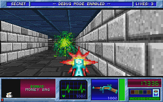
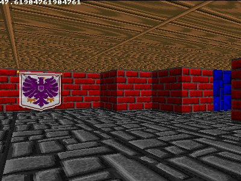
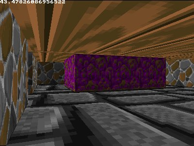
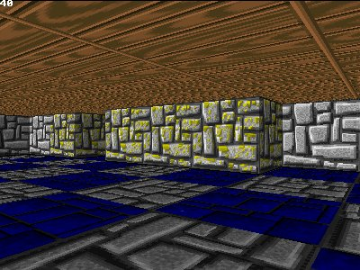
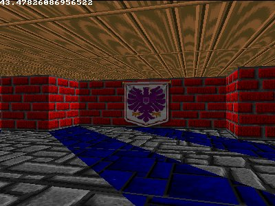

#define screenWidth 640
#define screenHeight 480
#define texWidth 64
#define texHeight 64
#define mapWidth 24
#define mapHeight 24
int worldMap[mapWidth][mapHeight]=
{
{8,8,8,8,8,8,8,8,8,8,8,4,4,6,4,4,6,4,6,4,4,4,6,4},
{8,0,0,0,0,0,0,0,0,0,8,4,0,0,0,0,0,0,0,0,0,0,0,4},
{8,0,3,3,0,0,0,0,0,8,8,4,0,0,0,0,0,0,0,0,0,0,0,6},
{8,0,0,3,0,0,0,0,0,0,0,0,0,0,0,0,0,0,0,0,0,0,0,6},
{8,0,3,3,0,0,0,0,0,8,8,4,0,0,0,0,0,0,0,0,0,0,0,4},
{8,0,0,0,0,0,0,0,0,0,8,4,0,0,0,0,0,6,6,6,0,6,4,6},
{8,8,8,8,0,8,8,8,8,8,8,4,4,4,4,4,4,6,0,0,0,0,0,6},
{7,7,7,7,0,7,7,7,7,0,8,0,8,0,8,0,8,4,0,4,0,6,0,6},
{7,7,0,0,0,0,0,0,7,8,0,8,0,8,0,8,8,6,0,0,0,0,0,6},
{7,0,0,0,0,0,0,0,0,0,0,0,0,0,0,0,8,6,0,0,0,0,0,4},
{7,0,0,0,0,0,0,0,0,0,0,0,0,0,0,0,8,6,0,6,0,6,0,6},
{7,7,0,0,0,0,0,0,7,8,0,8,0,8,0,8,8,6,4,6,0,6,6,6},
{7,7,7,7,0,7,7,7,7,8,8,4,0,6,8,4,8,3,3,3,0,3,3,3},
{2,2,2,2,0,2,2,2,2,4,6,4,0,0,6,0,6,3,0,0,0,0,0,3},
{2,2,0,0,0,0,0,2,2,4,0,0,0,0,0,0,4,3,0,0,0,0,0,3},
{2,0,0,0,0,0,0,0,2,4,0,0,0,0,0,0,4,3,0,0,0,0,0,3},
{1,0,0,0,0,0,0,0,1,4,4,4,4,4,6,0,6,3,3,0,0,0,3,3},
{2,0,0,0,0,0,0,0,2,2,2,1,2,2,2,6,6,0,0,5,0,5,0,5},
{2,2,0,0,0,0,0,2,2,2,0,0,0,2,2,0,5,0,5,0,0,0,5,5},
{2,0,0,0,0,0,0,0,2,0,0,0,0,0,2,5,0,5,0,5,0,5,0,5},
{1,0,0,0,0,0,0,0,0,0,0,0,0,0,0,0,0,0,0,0,0,0,0,5},
{2,0,0,0,0,0,0,0,2,0,0,0,0,0,2,5,0,5,0,5,0,5,0,5},
{2,2,0,0,0,0,0,2,2,2,0,0,0,2,2,0,5,0,5,0,0,0,5,5},
{2,2,2,2,1,2,2,2,2,2,2,1,2,2,2,5,5,5,5,5,5,5,5,5}
};
Uint32 buffer[screenHeight][screenWidth]; // y-coordinate first because it works per scanline
int main(int /*argc*/, char */*argv*/[])
{
double posX = 22.0, posY = 11.5; //x and y start position
double dirX = -1.0, dirY = 0.0; //initial direction vector
double planeX = 0.0, planeY = 0.66; //the 2d raycaster version of camera plane
double time = 0; //time of current frame
double oldTime = 0; //time of previous frame
std::vector<Uint32> texture[8];
for(int i = 0; i l-< 8; i++) texture[i].resize(texWidth * texHeight);
screen(screenWidth,screenHeight, 0, "Raycaster");
//load some textures
unsigned long tw, th, error = 0;
error |= loadImage(texture[0], tw, th, "pics/eagle.png");
error |= loadImage(texture[1], tw, th, "pics/redbrick.png");
error |= loadImage(texture[2], tw, th, "pics/purplestone.png");
error |= loadImage(texture[3], tw, th, "pics/greystone.png");
error |= loadImage(texture[4], tw, th, "pics/bluestone.png");
error |= loadImage(texture[5], tw, th, "pics/mossy.png");
error |= loadImage(texture[6], tw, th, "pics/wood.png");
error |= loadImage(texture[7], tw, th, "pics/colorstone.png");
if(error) { std::cout << "error loading images" << std::endl; return 1; }
//start the main loop
while(!done())
{
|
//FLOOR CASTING
for(int y = 0; y < h; y++)
{
// rayDir for leftmost ray (x = 0) and rightmost ray (x = w)
float rayDirX0 = dirX - planeX;
float rayDirY0 = dirY - planeY;
float rayDirX1 = dirX + planeX;
float rayDirY1 = dirY + planeY;
// Current y position compared to the center of the screen (the horizon)
int p = y - screenHeight / 2;
// Vertical position of the camera.
float posZ = 0.5 * screenHeight;
// Horizontal distance from the camera to the floor for the current row.
// 0.5 is the z position exactly in the middle between floor and ceiling.
float rowDistance = posZ / p;
// calculate the real world step vector we have to add for each x (parallel to camera plane)
// adding step by step avoids multiplications with a weight in the inner loop
float floorStepX = rowDistance * (rayDirX1 - rayDirX0) / screenWidth;
float floorStepY = rowDistance * (rayDirY1 - rayDirY0) / screenWidth;
// real world coordinates of the leftmost column. This will be updated as we step to the right.
float floorX = posX + rowDistance * rayDirX0;
float floorY = posY + rowDistance * rayDirY0;
for(int x = 0; x < screenWidth; ++x)
{
// the cell coord is simply got from the integer parts of floorX and floorY
int cellX = (int)(floorX);
int cellY = (int)(floorY);
// get the texture coordinate from the fractional part
int tx = (int)(texWidth * (floorX - cellX)) & (texWidth - 1);
int ty = (int)(texHeight * (floorY - cellY)) & (texHeight - 1);
floorX += floorStepX;
floorY += floorStepY;
// choose texture and draw the pixel
int floorTexture = 3;
int ceilingTexture = 6;
Uint32 color;
// floor
color = texture[floorTexture][texWidth * ty + tx];
color = (color >> 1) & 8355711; // make a bit darker
buffer[y][x] = color;
//ceiling (symmetrical, at screenHeight - y - 1 instead of y)
color = texture[ceilingTexture][texWidth * ty + tx];
color = (color >> 1) & 8355711; // make a bit darker
buffer[screenHeight - y - 1][x] = color;
}
}
|
//WALL CASTING
for(int x = 0; x < w; x++)
{
//calculate ray position and direction
double cameraX = 2 * x / double(w) - 1; //x-coordinate in camera space
double rayDirX = dirX + planeX * cameraX;
double rayDirY = dirY + planeY * cameraX;
//which box of the map we're in
int mapX = int(posX);
int mapY = int(posY);
//length of ray from current position to next x or y-side
double sideDistX;
double sideDistY;
//length of ray from one x or y-side to next x or y-side
double deltaDistX = (rayDirX == 0) ? 1e30 : std::abs(1 / rayDirX);
double deltaDistY = (rayDirY == 0) ? 1e30 : std::abs(1 / rayDirY);
double perpWallDist;
//what direction to step in x or y-direction (either +1 or -1)
int stepX;
int stepY;
int hit = 0; //was there a wall hit?
int side; //was a NS or a EW wall hit?
//calculate step and initial sideDist
if (rayDirX < 0)
{
stepX = -1;
sideDistX = (posX - mapX) * deltaDistX;
}
else
{
stepX = 1;
sideDistX = (mapX + 1.0 - posX) * deltaDistX;
}
if (rayDirY < 0)
{
stepY = -1;
sideDistY = (posY - mapY) * deltaDistY;
}
else
{
stepY = 1;
sideDistY = (mapY + 1.0 - posY) * deltaDistY;
}
//perform DDA
while (hit == 0)
{
//jump to next map square, either in x-direction, or in y-direction
if (sideDistX < sideDistY)
{
sideDistX += deltaDistX;
mapX += stepX;
side = 0;
}
else
{
sideDistY += deltaDistY;
mapY += stepY;
side = 1;
}
//Check if ray has hit a wall
if (worldMap[mapX][mapY] > 0) hit = 1;
}
//Calculate distance of perpendicular ray (Euclidean distance would give fisheye effect!)
if(side == 0) perpWallDist = (sideDistX - deltaDistX);
else perpWallDist = (sideDistY - deltaDistY);
//Calculate height of line to draw on screen
int lineHeight = (int)(h / perpWallDist);
//calculate lowest and highest pixel to fill in current stripe
int drawStart = -lineHeight / 2 + h / 2;
if(drawStart < 0) drawStart = 0;
int drawEnd = lineHeight / 2 + h / 2;
if(drawEnd >= h) drawEnd = h - 1;
//texturing calculations
int texNum = worldMap[mapX][mapY] - 1; //1 subtracted from it so that texture 0 can be used!
//calculate value of wallX
double wallX; //where exactly the wall was hit
if (side == 0) wallX = posY + perpWallDist * rayDirY;
else wallX = posX + perpWallDist * rayDirX;
wallX -= floor((wallX));
//x coordinate on the texture
int texX = int(wallX * double(texWidth));
if(side == 0 && rayDirX > 0) texX = texWidth - texX - 1;
if(side == 1 && rayDirY < 0) texX = texWidth - texX - 1;
// How much to increase the texture coordinate per screen pixel
double step = 1.0 * texHeight / lineHeight;
// Starting texture coordinate
double texPos = (drawStart - h / 2 + lineHeight / 2) * step;
for(int y = drawStart; y<drawEnd; y++)
{
// Cast the texture coordinate to integer, and mask with (texHeight - 1) in case of overflow
int texY = (int)texPos & (texHeight - 1);
texPos += step;
Uint32 color = texture[texNum][texWidth * texY + texX];
//make color darker for y-sides: R, G and B byte each divided through two with a "shift" and an "and"
if(side == 1) color = (color >> 1) & 8355711;
buffer[y][x] = color;
}
|
drawBuffer(buffer[0]);
for(int y = 0; y < h; y++) for(int x = 0; x < w; x++) buffer[y][x] = 0; //clear the buffer instead of cls()
//timing for input and FPS counter
oldTime = time;
time = getTicks();
double frameTime = (time - oldTime) / 1000.0; //frametime is the time this frame has taken, in seconds
print(1.0 / frameTime); //FPS counter
redraw();
//speed modifiers
double moveSpeed = frameTime * 3.0; //the constant value is in squares/second
double rotSpeed = frameTime * 2.0; //the constant value is in radians/second
readKeys();
//move forward if no wall in front of you
if (keyDown(SDLK_UP))
{
if(worldMap[int(posX + dirX * moveSpeed)][int(posY)] == false) posX += dirX * moveSpeed;
if(worldMap[int(posX)][int(posY + dirY * moveSpeed)] == false) posY += dirY * moveSpeed;
}
//move backwards if no wall behind you
if (keyDown(SDLK_DOWN))
{
if(worldMap[int(posX - dirX * moveSpeed)][int(posY)] == false) posX -= dirX * moveSpeed;
if(worldMap[int(posX)][int(posY - dirY * moveSpeed)] == false) posY -= dirY * moveSpeed;
}
//rotate to the right
if (keyDown(SDLK_RIGHT))
{
//both camera direction and camera plane must be rotated
double oldDirX = dirX;
dirX = dirX * cos(-rotSpeed) - dirY * sin(-rotSpeed);
dirY = oldDirX * sin(-rotSpeed) + dirY * cos(-rotSpeed);
double oldPlaneX = planeX;
planeX = planeX * cos(-rotSpeed) - planeY * sin(-rotSpeed);
planeY = oldPlaneX * sin(-rotSpeed) + planeY * cos(-rotSpeed);
}
//rotate to the left
if (keyDown(SDLK_LEFT))
{
//both camera direction and camera plane must be rotated
double oldDirX = dirX;
dirX = dirX * cos(rotSpeed) - dirY * sin(rotSpeed);
dirY = oldDirX * sin(rotSpeed) + dirY * cos(rotSpeed);
double oldPlaneX = planeX;
planeX = planeX * cos(rotSpeed) - planeY * sin(rotSpeed);
planeY = oldPlaneX * sin(rotSpeed) + planeY * cos(rotSpeed);
}
}
}
|

int floorTexX, floorTexY;
floorTexX = int(currentFloorX * texWidth) % texWidth;
floorTexY = int(currentFloorY * texHeight) % texHeight;
|
int floorTexX, floorTexY;
floorTexX = int(currentFloorX * texWidth / 4) % texWidth;
floorTexY = int(currentFloorY * texHeight / 4) % texHeight;
|

//draw the floor from drawEnd to the bottom of the screen
for(int y = drawEnd + 1; y < h; y++)
{
currentDist = h / (2.0 * y - h); //you could make a small lookup table for this instead
double weight = (currentDist - distPlayer) / (distWall - distPlayer);
double currentFloorX = weight * floorXWall + (1.0 - weight) * posX;
double currentFloorY = weight * floorYWall + (1.0 - weight) * posY;
int floorTexX, floorTexY;
floorTexX = int(currentFloorX * texWidth) % texWidth;
floorTexY = int(currentFloorY * texHeight) % texHeight;
int checkerBoardPattern = (int(currentFloorX) + int(currentFloorY))) % 2;
int floorTexture;
if(checkerBoardPattern == 0) floorTexture = 3;
else floorTexture = 4;
//floor
buffer[y][x] = (texture[floorTexture][texWidth * floorTexY + floorTexX] >> 1) & 8355711;
//ceiling (symmetrical!)
buffer[h - y][x] = texture[6][texWidth * floorTexY + floorTexX];
}
}
|


for(int x = 0; x < w; x++)
{
//WALL CASTING
// [SNIP... the floor casting code goes in the same x-for-loop as the wall casting, wall casting code not duplicated here]
//FLOOR CASTING (vertical version, directly after drawing the vertical wall stripe for the current x)
double floorXWall, floorYWall; //x, y position of the floor texel at the bottom of the wall
//4 different wall directions possible
if(side == 0 && rayDirX > 0)
{
floorXWall = mapX;
floorYWall = mapY + wallX;
}
else if(side == 0 && rayDirX < 0)
{
floorXWall = mapX + 1.0;
floorYWall = mapY + wallX;
}
else if(side == 1 && rayDirY > 0)
{
floorXWall = mapX + wallX;
floorYWall = mapY;
}
else
{
floorXWall = mapX + wallX;
floorYWall = mapY + 1.0;
}
double distWall, distPlayer, currentDist;
distWall = perpWallDist;
distPlayer = 0.0;
if (drawEnd < 0) drawEnd = h; //becomes < 0 when the integer overflows
//draw the floor from drawEnd to the bottom of the screen
for(int y = drawEnd + 1; y < h; y++)
{
currentDist = h / (2.0 * y - h); //you could make a small lookup table for this instead
double weight = (currentDist - distPlayer) / (distWall - distPlayer);
double currentFloorX = weight * floorXWall + (1.0 - weight) * posX;
double currentFloorY = weight * floorYWall + (1.0 - weight) * posY;
int floorTexX, floorTexY;
floorTexX = int(currentFloorX * texWidth) % texWidth;
floorTexY = int(currentFloorY * texHeight) % texHeight;
//floor
buffer[y][x] = (texture[3][texWidth * floorTexY + floorTexX] >> 1) & 8355711;
//ceiling (symmetrical!)
buffer[h - y][x] = texture[6][texWidth * floorTexY + floorTexX];
}
}
|